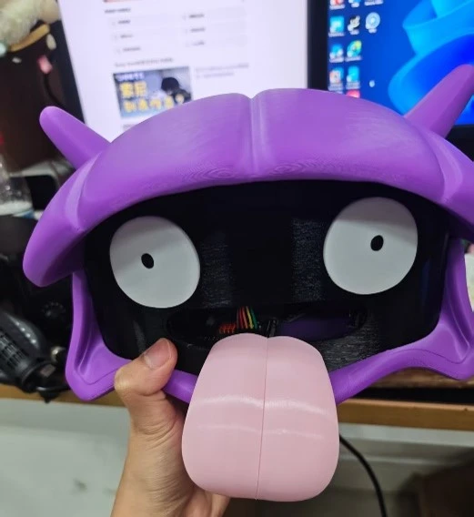
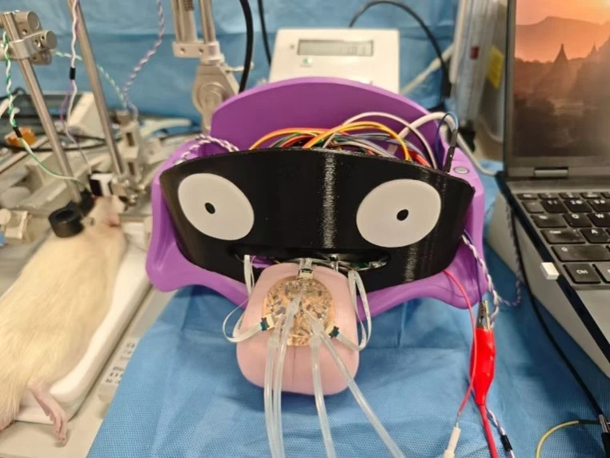
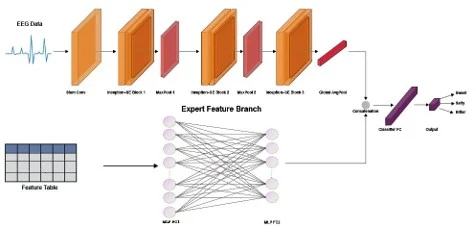
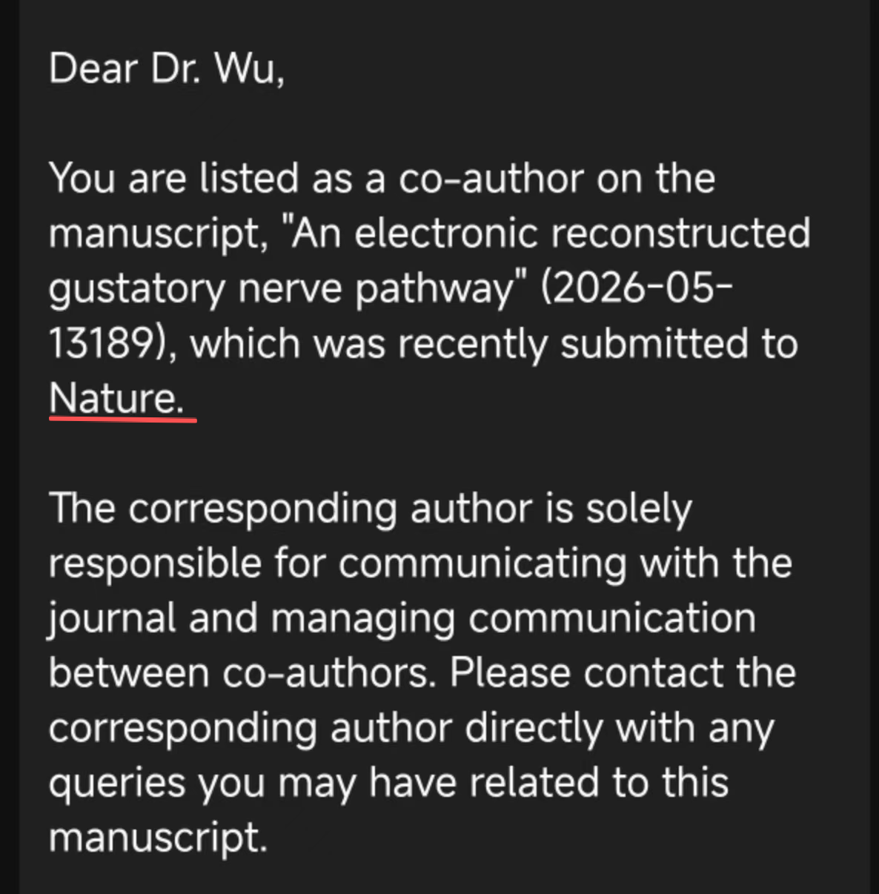

前端：高精度信号采集
设计味觉传感器采集电路，将传感器输出转换为可用于分类的信号，支持五种基础味觉的识别。
RESEARCH / SENSING & SYSTEMS
连接味觉传感器采集、边缘识别、电刺激与脑电解码，探索人工重建味觉通路。我的工作集中在采集电路与识别算法。
01 / MOTIVATION
面向味觉丧失后的重建需求，这项研究探索如何将电子传感器感知的味觉信息转化为神经系统可接收的刺激。研究链路涉及味觉信号采集、边缘分类、电刺激编码与脑电响应分析。
我的工作聚焦采集电路、边缘计算识别和脑电算法。通路重建是团队层面的系统研究，简历所述神经接口验证基于小鼠实验。

02 / SYSTEM
设计味觉传感器采集电路，将传感器输出转换为可用于分类的信号，支持五种基础味觉的识别。
将识别模型部署到边缘计算设备，实时将味觉信号转化为特定频率电刺激，经神经突触电路与定制电极接入小鼠神经。


03 / MY CONTRIBUTION
负责前端电路设计，建立传感器信号获取通道，为后续味觉分类提供输入。
负责味觉识别及边缘部署，连接前端采集结果与系统后续刺激编码。
设计脑电识别算法，对真实味觉刺激和电刺激诱发的脑电响应进行分类分析。
以共同作者身份参与研究。个人贡献按简历列出的电路与算法工作介绍，不将团队的全部器件、神经接口与动物实验工作归为个人完成。
04 / RESULTS
| 实验环节 | 结果 | 含义 |
|---|---|---|
| 五种基础味觉分类 | 99.6% | 传感器信号的味觉类别识别准确率 |
| 真实味觉刺激脑电识别 | 超过 95% | 对真实味觉刺激诱发脑电的分类 |
| 电刺激诱发脑电识别 | 63% | 对重建刺激诱发脑电的分类 |
三项指标对应不同输入与实验环节，不是同一任务的准确率，也不等同于人体味觉恢复率。提供的 Nature 文件夹以图像材料为主，未包含完整正文或统计方法；本页不补写未提供的样本数、试验次数与临床效果。
05 / SUBMISSION
简历标注“在投（已送审）”。下方邮件可确认投稿及作者通知，送审状态按个人简历描述。
投稿确认邮件记录了稿件提交和作者通知，不代表录用或发表。

依据：个人简历研究内容、Nature 论文文件夹的三张研究图与投稿通知。研究时间：2025.09 — 2026.05。